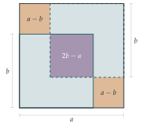

STEP III 2015、第5問
先に進む前に問題を読んでおこう。問題は STEP Support Programme の問題データベースにある： step.maths.org/questions/15-s3-q5
導入
\(\sqrt2\) が無理数（irrational）であることの証明は、おそらく見たことがあるだろう。\(\sqrt2 = a/b\) を既約分数と仮定し、両辺を2乗して、\(a\) が偶数であること、続いて \(b\) も偶数であることを導き、矛盾を得るというものである。これは立派な証明である。しかし、この証明は偶数に関する技巧に頼っており、それがそのまま一般化できるかどうかは明らかでない。\(\sqrt[3]{2}\) ならどうだろうか。\(\sqrt{7}\) ならどうだろうか。
この問題は別の証明を与えるものであり、その中心にある考え方はほとんど拍子抜けするほど単純である。それは最小のものに注目せよということである。同じ考え方は、姿を変えて、この章で何度も再登場する。
取りかかる前に
これは STEP の問題としては珍しいものである。証明の骨組みが与えられ、欠けている根拠を埋めることが求められている。これはまさに、大学生が数学の読み方を身につけるやり方そのものである。教科書の証明にはしばしば「明らかに」や「このことから〜が従う」と書かれており、それが本当にそうなっているかを確かめるのも読み手の仕事の一部である。
ステップ4では「\(k\) を \(S\) に属する最小の正の整数と定める」とある。なぜそうしてよいのだろうか。\(S\) が正の実数の集合であったとしても、それは許されるだろうか。
正の整数からなる空でない集合には、必ず最小元が存在する。これを整列性原理（well-ordering principle）といい、数学的帰納法（mathematical induction）の原理と同値である。正の実数の集合に対しては、これは成り立たない。実際、集合 \(\{x : x > 0\}\) には最小元がない。したがって、ステップ4はステップ3（集合が空でないこと）と、\(S\) が整数からなることに依存している。
順を追って解く
段階 1 ステップ3：\(S\) は空でない
正の整数 \(a\), \(b\) によって \(\sqrt2 = a/b\) と書けるとき、\(S\) の元を一つ具体的に書き出せるだろうか。
\(\sqrt2 = a/b\) ならば \(b\sqrt2 = a\) であり、これは整数である。よって \(b\) は \(S\) に属し、\(S\) は空でない。
段階 2 ステップ5：より小さい元
さて、\(k\) は \(S\) の最小元であるから、\(k\sqrt2\) は整数である。これを \(j\) とおく。
\((\sqrt2 - 1)k\) が \(S\) に属することを示すには、三つのことを確かめなければならない。それは何だろうか。
\((\sqrt2-1)k\) が (a) 整数であり、(b) 正であり、(c) \(\sqrt2\) を掛けると整数になる、ということを示す必要がある。
(a) \((\sqrt2 - 1)k = k\sqrt2 - k = j - k\) であり、これは整数どうしの差である。
(b) \(\sqrt2 > 1\) より \(\sqrt2 - 1 > 0\) であるから、\((\sqrt2-1)k > 0\) である。
(c) \((\sqrt2-1)k \cdot \sqrt2 = 2k - k\sqrt2 = 2k - j\) であり、これは整数である。
よって \((\sqrt2 - 1)k \in S\) である。
段階 3 ステップ6：矛盾
\(\sqrt2 - 1\) はどのくらいの大きさだろうか。
\(1 < \sqrt2 < 2\) であるから \(0 < \sqrt2 - 1 < 1\) であり、したがって \((\sqrt2 - 1)k < k\) である。こうして、\(S\) の最小元である \(k\) よりも小さい \(S\) の元が見つかった。これは不可能であるから、ステップ 1 の仮定は誤りであった。すなわち \(\sqrt2\) は無理数である。■
「既約分数」も、偶数・奇数に関する性質も一切使わなかったことに注意しよう。証明全体は三つの事実の上に成り立っている。\(\sqrt2 \cdot \sqrt2\) が整数であること、\(\sqrt2\) が連続する二つの整数の真に間にあること、そして整数が整列性をもつことである。
段階 4 立方根：二つの数を結びつける
\(c = 2^{1/3}\) とおくと、\(c^2 = 2^{2/3}\) かつ \(c^3 = 2\) である。
\(c\) が有理数（rational）ならば、\(c^2\) も有理数だろうか。また、\(c^2\) が有理数ならば、掛け算と割り算だけを使って \(c\) に戻れるだろうか。
\(c\) が有理数ならば、\(c^2 = c \times c\) も有理数である。逆に、\(c^2\) が有理数ならば、\(2 / c^2 = c^3 / c^2 = c\) も有理数である。よって、\(2^{1/3}\) が有理数であることと \(2^{2/3}\) が有理数であることは同値である。■
段階 5 議論を応用する
小問 (i) での鍵は \((\sqrt2)^2 = 2\) が整数であることであった。そのため、\(S\) の元に \(\sqrt2\) を2回掛けると整数に戻る。\(c = 2^{1/3}\) の場合は3回掛ける必要がある。集合 \(S\) をどのように変えればよいだろうか。
\(c\) が有理数であると仮定する。このとき \(c^2\) も有理数である。 \[S = \{ n \text{ は正の整数} : nc \text{ と } nc^2 \text{ はともに整数} \}.\] と定める。
\(S\) は空でない。 \(c = a/b\), \(c^2 = a'/b'\) とすると、\(bb'\) は \(S\) に属する。
\(k\) をその最小元とし、\((c - 1)k\) を考える。\(1 < c < 2\)（\(1^3 < 2 < 2^3\) による）であるから、\(0 < (c-1)k < k\) である。
これは整数である： \((c-1)k = kc - k\)。
\(c\) を掛けると： \((c-1)k \cdot c = kc^2 - kc\) であり、これは整数である。
\(c^2\) を掛けると： \((c-1)k \cdot c^2 = kc^3 - kc^2 = 2k - kc^2\) であり、これは整数である。
よって \((c-1)k \in S\) であり、しかも \(k\) より小さい。これは矛盾である。したがって \(2^{1/3}\) は無理数であり、段階 4 により \(2^{2/3}\) も無理数である。■
振り返り
「最小のものをとる」は証明の技法である。 反例が存在すると仮定し、その最小のものをとって、さらに小さい反例を作り出す。これを極端原理（extremal principle）、あるいは最小反例（minimal counterexample）による議論という。
集合 \(S\) が帳簿係を務めた。 分子と分母をあれこれ操作する代わりに、「よい」乗数をすべて一つの集合にまとめたのである。
一般化とは、何が本当に証明を成り立たせていたのかを問うことであった。 \(\sqrt2\) の場合は \(\sqrt2\) を1回掛ければよく、\(\sqrt[3]{2}\) の場合は2回必要であった。このことに気づいたおかげで、\(S\) をどう定義し直せばよいかが正確にわかった。
背後にある数学
小問 (i) の背後には、Stanley Tennenbaum による美しい図がある。\(\sqrt2 = a/b\) ならば \(a^2 = 2b^2\) である。つまり、一辺 \(a\) の正方形は、一辺 \(b\) の正方形2個と同じ面積をもつ。図 1.3.1 のように、二つの \(b\) の正方形を \(a\) の正方形の向かい合う隅に置く。すると、それらは小さな正方形の部分で重なり、また覆われない小さな正方形が二つ残る。面積が等しいことから、重なった部分は覆われない二つの正方形を合わせたものに等しくなければならず、同じ性質をもつより小さい整数の組が得られる。より小さい組がいつまでも続くことはありえないので、そのような正方形は存在しない。より小さい組はちょうど \((2b - a,\; a - b)\) であり、これは私たちの \((\sqrt2 - 1)k\) のステップが姿を変えたものにほかならない。

整列性、帰納法、降下法
整列性原理と帰納法の原理は論理的に同値である。すなわち、それぞれが他方から証明できる。大学では、どちらも自然数の基礎として用いられるのを目にするだろう。第 1.5 節 では、同じ原理を別の形、すなわちフェルマー（Fermat）の無限降下法（method of infinite descent）として用いる。それは、正の整数からなる狭義単調減少の無限数列は存在しない、という形である。
どこまで通用するか
この議論によって、\(N\) が平方数（perfect square）でないときには必ず \(\sqrt N\) が無理数であること（演習を参照）、さらに一般に、整数の \(n\) 乗根は整数であるか無理数であるかのいずれかであることが証明できる。大学では、これは代数的整数（algebraic integers）に関する主張となる。すなわち、\(x^3 - 2 = 0\) のような、整数係数のモニック多項式（monic polynomial）の方程式を満たす有理数は、整数でなければならない。この考え方には 第 6.3 節 で再び出会うことになる。
ピタゴラス学派（Pythagoreans）が \(\sqrt2\) の無理性を明かしたヒッパソス（Hippasus）を溺死させたという伝説は、おそらく事実ではない。確かなのは、この発見によってギリシャの数学者たちが数の研究と長さの研究を切り離さざるをえなくなったということである。この分裂が癒やされるには、19世紀、そしてデデキント（Dedekind）による実数の構成を待たなければならなかった。
思考のスキル
あることが決して起こらないことを示したいときは、それが起こると仮定し、その最小の（あるいは最大の、あるいは最も単純な）例を選び、それを用いてさらに小さい例を作れ。
「最小」が何を意味するかの選び方こそが、創造的なステップである。ここでは、それは \(n\sqrt2\) を整数にする最小の \(n\) であった。
次の一歩
ほかの平方根。 この議論を応用して、\(\sqrt3\) が無理数であることを示せ。\(\sqrt2 - 1\) の役割を果たすのはどの数か。
平方数でないものすべて。 \(N\) を平方数でない正の整数とし、\(m\) を \(m < \sqrt N < m+1\) を満たす整数とする。\((\sqrt N - m)k\) を考えることにより、\(\sqrt N\) が無理数であることを証明せよ。
誤りを見つけよ。 この議論を \(\sqrt 4\) に対して実行してみよ。正確にはどのステップで破綻するか。
Tennenbaum の図。 図 1.3.1 を用いて、\(a^2 = 2b^2\) ならば \((2b-a)^2 = 2(a-b)^2\) であることを示せ。また、この恒等式を代数的にも確かめよ。
さらに学ぶために
Daniel Velleman, How to Prove It（Cambridge University Press）。帰納法や整列性を含む、証明への徹底した入門書。
R. P. Burn, A Pathway into Number Theory（Cambridge University Press）。注意深く順序立てられた問題だけで構成された本。大学1年次の講義への準備として理想的である。
John Conway & Joseph Shipman, 「Extreme proofs I: the irrationality of \(\sqrt2\)」（Mathematical Intelligencer, 2013）。一つの事実に対する多くの証明を、機知に富んだ筆致で比較している。